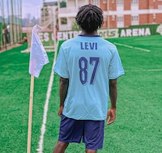

Levi Malesh | WDD 130

My name is Levi Malesh. I live in Kampala Uganda. I am a BYU Pathway student studying Software development at BYU Idaho. I am a soccer player. I am a versatile player, I can play multiple positions such as right wing, left wing, central midfield and attacking midfiled